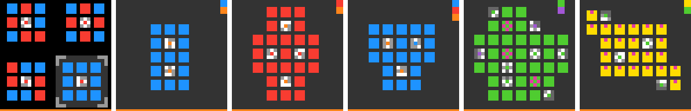
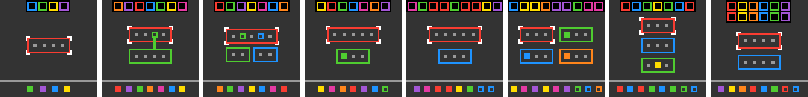
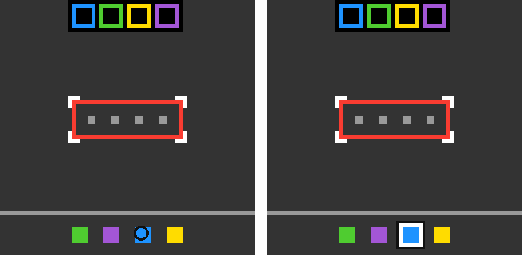

Abstract
ARC-AGI-3 evaluates an agent on small interactive games for which no rules, goals or instructions are provided. This project studies whether an open-weight 27B language model (Qwen3.8-27B), used without any fine-tuning, can solve such games when it is paired with a deterministic software harness. The model is responsible only for proposing hypotheses about the game. The harness is responsible for perception, for recording every state transition, for testing each proposed rule against the recorded history, and for executing plans under explicit guard conditions.
With this division of responsibility the system completed all 6 levels of the public game ft09 and all 8 levels of the public game sb26. Both games were used during development. The results therefore validate the design of the harness and should not be read as an estimate of leaderboard performance.


01Problem statement
In ARC-AGI-2 a solver receives several solved examples and one test input. ARC-AGI-3 removes the examples. The agent receives a 64×64 frame with 16 colours and a small action set: four directional actions, a few buttons, and a click at a chosen coordinate. It must determine, by acting, which parts of the frame belong to the game world, what each action does, and what condition completes a level. The score rewards action efficiency, measured as the number of real actions the agent needs.
Levels within one game share their mechanics and increase in difficulty. Figure 2 shows the opening frame of every level of the two games studied here.


ft09 a few tiles carry a small pattern that specifies the target state of a panel. In sb26 a target row at the top specifies the order in which tokens must be read from the boxes below; from level 2 onward, boxes refer to other boxes.The research question is one of transfer. Recent work on executable world models for this benchmark (WorldCoder, Schema, Retrodict, Tycho) relies on frontier models behind an API. This project asks how much of that approach remains effective when the model is a 27B open-weight model that can be served on a single GPU.
02Baseline and its failure modes
The baseline agent presents the current frame to the model, lets it reason, executes the action it names, and repeats. This agent fails in the same three ways on almost every game.
- Perception. Given a 64×64 grid as text, the model spends thousands of tokens transcribing rows and still misplaces object boundaries.
- Untested hypotheses. The model holds several explanations of an action at once (select, toggle, move) and does not design an action that would distinguish them.
- Loss of established facts. Once the context fills, a fact established on level 1 is derived again, sometimes incorrectly, on level 4.
A larger reasoning budget does not remove any of these failures. Additional reasoning is useful only after the model is given a correct structured description of the game.
03Approach
The system separates proposing from checking. The language model proposes what the objects are, what an action does, and what completes a level. A deterministic Python harness, which contains no learned components, owns every operation that can be computed or verified exactly.
| Component | Function |
|---|---|
| Perception | Extracts connected regions, boxes, repeated shapes and tile grids with coordinates, and presents them as a table. It assigns no meaning to any object. |
| Transition ledger | Stores the frame before, the action, the frame after and the exact set of changed cells for every real action. When a model note contradicts the ledger, the harness cites the contradicting transition. |
| Rule verification | Replays each proposed rule over the full recorded history and reports the first transition at which it fails. |
| Guarded execution | A multi-action plan carries the cell changes the model expects. The harness executes one action at a time and halts at the first deviation. |
| Turn scheduling | Separates discovery turns from execution turns. A fully verified plan is executed without asking the model to reason about it again. |
The first actions on a new game are probes: single actions chosen to answer one question. Figure 3 shows the first action of the sb26 run.

04Case studies
ft09: a relation between distant regions
Without assistance the model treated each panel of tiles as a separate puzzle. The missing element was a relation between regions that are far apart on screen: the small patterned tile inside a panel is a miniature of that panel's target state. Clicking a tile toggles its colour, and the level completes when every panel matches its miniature.
The harness was not changed to state this rule. It was changed to report panels in pairs, to express tile coordinates in panel space rather than pixel space, and to list reflections and colour permutations between regions as candidate relations. After this change the model's plans took the following form.
Toggle BR tile (36,52) from blue to red to match micro swatch 0 at row2,col0. This is the last mismatch; expect level completion.
Qwen3.8-27B, third action of the completed ft09 run
The run completed all six levels in 75 actions and 26 model calls, in about eleven minutes. No action produced a result that the model had not predicted.
sb26: references between containers
The top row gives the order in which tokens must appear. The boxes in the middle contain slots. From level 2 onward, some slots contain a hollow token in the colour of another box, which means that reading continues inside that box. A depth-first reading of the boxes yields one sequence, and the level completes when that sequence equals the top row.
A flat list of connected regions cannot express this structure. The harness therefore constructs a small graph: boxes contain slots, slots contain solid tokens or hollow references, and a hollow reference may point to the box of the same colour. The graph is built in 12 to 15 ms per frame and carries no interpretation of its edges. Given the graph, the model proposed the depth-first reading, the harness verified it against every completed level, and the remaining levels were solved largely by bookkeeping.
The run shown in Figure 1 used 124 actions and 90 model calls over 44 minutes. Thirteen actions produced an outcome the model had not predicted. In each case the harness halted the plan and the model revised its description.
05Results
| Game | Levels | Actions | Model calls | Mispredicted | Run conditions |
|---|---|---|---|---|---|
ft09 | 6 / 6 | 75 | 26 | 0 | Single run from empty memory |
sb26 | 8 / 8 | 124 | 90 | 13 | Completed across several resumed sessions |
06Negative results
An all-or-nothing verifier provides no gradient
The first verifier asked the model for a complete simulator and counted a transition as correct only if all 4,096 cells matched. One wrong cell scored the same as a crash, and because the simulated state was rolled forward, one early error invalidated every later transition. The verifier now reports separately whether the code ran, how many transitions are exact, what fraction of cells is correct, and which transition fails first. New code replaces old code only if it improves on this backtest.
Persistent memory can preserve an incorrect belief
In one resumed sb26 session the model's notes still stated that a click erases and repaints a token, long after the ledger showed the token moving as a block. Notes are now presented together with their age and with the harness's own record of what each action caused.
Context compaction removed the most relevant evidence
Naive summarisation kept long early discussions of pixels and discarded recent evidence. The current level is now kept in full, completed levels are removed oldest first, and what was learned from them is kept as a short rule with its counterexamples.
Repeated verification of verified plans
Even when exact target cells had been computed, the model spent thousands of tokens checking coordinates again. Separating discovery turns from execution turns removed most of this cost on later levels.
07Limitations
Both games were inspected during development, so they constitute a development set. The sb26 result was obtained across resumed sessions and is not a single uninterrupted run. No result here is a Kaggle score, and there is currently no evidence about games that were not studied during development.
08Future work
- Freeze the harness and repeat both games from empty memory several times to measure how reliably they are completed.
- Extend to the remaining public games, adding one general representation for the earliest failure observed on each.
- Report time, tokens, real actions and the number of harness interventions as separate quantities.
- Package the model and harness for the offline Kaggle GPU environment and measure how many games can run concurrently within the available KV cache.
- Train on intermediate decisions (object roles, discriminating probes, repair location, stopping) and not only on final action sequences.